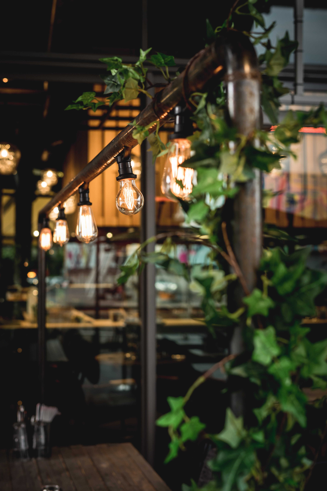

eatingMode je jedan od prvih restorana zaslužnih za transformaciju do tada napuštene i zaboravljene Beton Hale u sada već kultno mesto beogradske gastronomske scene i nezaobilaznu turističku destinaciju na obali Save. Ponosno služimo naše goste od 2010. godine, ponudom koja podrazumeva najbolje iz italijanske i mediteranske kuhinje u kombinaciji sa najfinijim iz Josper grila uz jedinstvenu ponudu bara i našu veoma pažljivo biranu vinsku kartu. Sve to uz vrlo diskretan kreativni zamah u jedinstvenom enterijeru jer želimo samo najbolje za vas.
Mesto gde jedete. Gde otkrivate iskustva. Gde uživate.